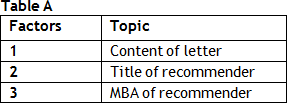
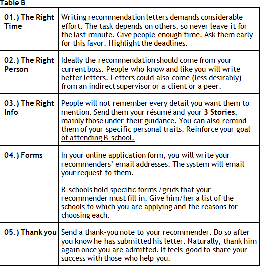

Before anything, let’s recall: business schools present 7 requirements (7 Products, 7 P’s).
P1.) Essays;
P2.) Interviews;
P3.) Recommendation Letters;
P4.) Data Form;
P5.) Résumé;
P6.) Score Tests (GMAT & TOEFL);
P7.) Transcripts.
It’s always good to have a view of the whole. What exactly are the letters like? Generally speaking, what’s the relevance of a recommendation?
Here’s a very short introduction:
- What: Recommendation letters (or Reference Letters ) are lists of questions about your professional values (most of the time it is not a written letter);
- Why: Schools need extra reference to assess your values;
- How: Letters must be specific per school, with detailed answer to every question;
- Who: Letters should come from (preferably) a current direct boss (do not ask a college professor for a letter, for example);
- When: The letter should reach the AdCom before application deadline. It is your responsibility, not the recommender’s, to manage this process and, thus, make sure that the letters reach the Ad Com within deadline. Warn the writers about the workload in number of hours. Give them enough time to work and send them a reminder about deadlines.
What should be my “number 1” concern about the letters?
Recommendation Letters should complement and reinforce your 3 STORIES THESES.
Would you expand on that, please?
The reference letters serve one exclusive purpose: reinforce the THESES that you defend (i.) in your essays and the ones that you will defend (ii.) in the ~40 minutes of your interview.
Ok, they must defend, broadly speaking, what I have written in my 3 STORIES?
Yes, the recommenders should know what you’re selling.
Remember that your candidacy is not limited to essays. But, yes, ideally, they should know your 3 Competences.
Would it not be important if my recommender mentioned other competences of mine that are not discussed in my essays?
I believe in the relevance of the “number 1” element in your Self Brand Exercise – Be COHERENCE. Ask the writer to illustrate the letter with events that reinforce the same competences explored in your essays.
Gosh. Even the most devoted recommender may fail to validate or reinforce my 3 Competences. Thus I can, not to say should, offer the writers some help.
You should. This is ideally a four-hand task. Offer to discuss details of your 3 STORIES. Please, refresh his/her memory.
I understand that you highlighted COHERENCE in my Big Synthesis Exercise, but it will be difficult to find a guy who has known me for four months (the duration of a project), and have him say exactly what I am selling in my 3 STORIES.
No one from the AdCom expects that much COHERENCE. Actually, it is even awkward to read a letter that repeats ipsis litteris what you wrote in your essays or said during your interview.
It will be clear that the applicant rather than the recommender wrote the letter, is that it?
Yes and not only that. The recommender is expected to have a different understanding of the same events.
Again, so the recommender does not have to say that I am competent in, for example, (1.) SP-6 - Aptitude to Question de Status Quo; (2.) SP-8 - Ability to Bring out the Best in People?
Not with those words. Nevertheless, if in the stories he/she tells I can see that you are essentially (1.) analytically brilliant (SP-1); and (2.) a creative guy (SP-2), I will regard the letter as inefficient.
I understand. Although those are good competences, they do not remind the reader of the IMAGE (Self Brand) that I want to build in his/her mind.
Right, right - once again, COHERENCE is the key word. I know it might sound strange to show so much coherence between the letter and what you defend in your essay/interview, but try to get your recommender’s THESES closer to yours, ok?
From what I observed in the “word limit” of the proposed questions, the letters do not offer much space for sale, either.
That is true. Perhaps it is worth putting into context concrete STORIES that support 2 of 3 Competences from your 3 STORIES.
Remember that before you talk to your recommender, you know your sale, ok?
Sure. Before I go after the two guys who will write the letters, I must know exactly what I am selling.
It looks obvious, right? Many applicants invite someone to defend their theses when they actually have no theses.
I guess the inference is “my recommender will know how to sell me.”
One of the guys I have in mind to invite as a recommender will want to write “without my help.”
It is your responsibility to manage this process. You should make sure that he/she will defend your THESES, that is, your brand positioning.
I will have him read my 3 STORIES and I will invite him for lunch.
Consider that he could be one of your 3 Wise Men. Explain the process to him and what Ad Com expects regarding sale. It should be your responsibility to “educate” your recommender.
I bet an American recommender knows how to sell. In Brazil people have prejudice against this kind of sale. Well, one of my recommenders is Brazilian but did his MBA in the US.
Watch out. I have seen many MBA’s write horrible letters even when they are motivated by good intentions to defend the applicants.
Any tip regarding “writing style”?
Always, always basic principles of effective communication - remember 3 P’s (See attached file).
I’ve read these following excerpts from the school sites. Both schools emphasize P - PICTURE.
“Choose individuals who know you well, and who will take the time to write thorough, detailed letters with specific anecdotes and examples, particularly of your leadership potential and personal qualities. We are impressed by what the letter says and how it reads, not by the title of the person who writes it”. Stanford
“We have this question that says, "Please describe the most important piece of constructive feedback you have given the applicant." If a person can answer that, they know the candidate well enough. The best recommendations have a lot of verbs. They say, "She did this", versus adjectives that simply describe you.” Harvard
I like what is said: “FEWER ADJECTIVES, MORE VERBS.” But it is easier said than done. We’ve seen so many empty, vague letters that say nothing valuable about the candidate.
Ok, Megaron, I got it: “show rather than tell.”
Remind your recommender of that. Ask him/her not to go for abstraction.
And how should I choose my recommenders? I am a consultant. I have many options. I’ve heard that it is better when the recommender is an alumnus from the school to which I am applying. Is that true?
Take it easy there. Check the Table A below and reflect on the order of importance in the selecting recommenders.

So if I am applying to MIT Sloan and my choices of recommenders are between a firm’s partner from MIT who knows me superficially and a manager from Cornell who knows me well, I should pick the latter. Is that it?
Definitely, yes, for letter content is by far the most relevant element in your selection.
What if the school is MIT Sloan and my options are (i.) the manager from MIT Sloan who knows me well; (ii.) partner from HBS who knows me not so well.
It is tough to say anything; what do you mean with “knows me not so well”? If in general they would both write the same letter, with the same richness of CONCRETE evidence/illustration, then choose the firm’s partner who attended HBS.
It is better to have two recommenders from distinct employers, right?
You should prefer your immediate supervisor or someone who has known you well in the past 2-3 years.
Stanford demands that one of the recommendations come from "your current direct supervisor". To consultants (my case), does that mean that the recommender should be the manager of my current assignment or can I ask my manager from a former project?
In general, we recommend that the applicant ask his/her immediate supervisor for a letter. Stanford suggests (and we reinforce that) that in case that is not possible, the applicant use the “additional information” space provided on the data form or the optional essay to explain the reasons. The atypical dynamics of consulting projects somehow affects the concept of direct supervisor. Stanford makes such request because it expects an immediate superior to be more prepared to reveal the values of the applicant… that is all. If you have been in a rather “unattractive” assignment in the past three months, don’t bother to pick a recommender from this specific project just because it is the most recent. If the assignment that best shows your skills and that highlights your “brand” ended in APRIL, ask the letter to the Manager/Partner/MD with whom you worked in this project. Thus, you CAN choose a boss from an older assignment.
Ok, at the end the criterion is quite simple: two letters that bring more insights into your candidacy.
Exactly. Again, Admissions Committee members might find strange the fact that a twenty-something analyst is not being recommended by someone who has worked in a recent engagement (that is, this year). After all, in 2.5 years of experience, the most interesting projects should be, a priori, the most recent, right?
Any tip for me to manage my recommender?
Observe the table B below:

Thank you very much – great synthesis.
It seems that the recommender should know much of what I am selling. I wonder how an MBA application coach/consultant can write letters to his clients.
Generic letters, with many beautiful words, are of no help. As the HBS admission committee member wrote: “The best recommendations have a lot of verbs”.
All right. I feel ready to write the draft that my recommender asked me for. What should I do now?
Well, before anything, try to involve him in the elaboration of the product. The letter will be much better with his/her contribution.
I will try to schedule lunch to discuss the letter and then send him a draft.
Feedback really makes the difference.
We put together a Recommendation Letter Framework - a guide to help you guide your recommenders.
Cool. Help is always welcome. How does it work?
We built a 3-Question Framework. From the analysis of the questions required by the b-school we selected the seven most important. We also offer tips and instructions to help you answer those questions (See attached file: Megaron_Rec Letters_FRAMEWORK).
Not all schools will ask these same 3 questions, then?
Nope. Some will require only 4-5, but I believe that you should answer all seven. From this matrix your recommender can make all adaptations.
Megaron, can’t you show me (rather than tell) concretely what the most common mistakes are in a Recommendation Letter?
I surely can. I put together a document with excerpts of letters, BAD vs. GOOD (See attached file).
Would it be possible to disclose the letters for the 8 Heroes?
Wow, it will help a lot to have an idea of the level of the letters for someone admitted to at top MBA.
Perhaps you might want to show your recommender these 4 models. You could help him have an idea of the quality of the letter.
Excellent idea. And what’s that story of waiving? Giving up the right to see the letters sent to the b-school, is that it?
In your online application form you will be asked about your right to see the letters. Waive your right to read the letters. You will make the admission committee confident that your recommenders have written a straight and honest letter.
I get it. I will check the “waive” box, then. What should I know about the grid? Does every school have a different one?
Schools display a grid to fill out with an evaluation on the applicant’s traits. Please tell your recommender that even if he genuinely likes you, he cannot give you the maximum grade to every item. He should not look contradictory, either.
Yes, perhaps your recommender finds it difficult to write in English. Perhaps the description of the 8 Competences will inspire him. Observe that for each Competence there is a selection of related sentences, “perfect phrases” (“Individual with a HIGH level of “Ability to Think Creatively” would strongly endorse such statements as THESES.” (See attached Heroes’ Theses - 8 Competences - 8 Superpowers)
To end here, do not make the mistake of the applicant mentioned in the Business Week article, How to Sink an MBA Application: “a father referred his son to INSEAD, rated him average, and wrote that he was passive and lacked the qualities of a true leader.”
Relax. If my father could recommend me, he would show me as the best applicant ever in the history of MBA application process.